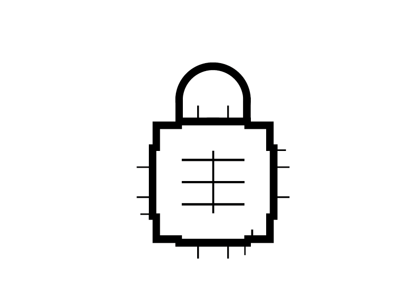

This experience covers very real and intense topics.
Controls
Use WASD to move, use F to crouch and the MOUSE to look around
If you get stuck hit R to return back to the start
This experience is made to digitalise my personal recurring dreams,
they all relate to my mental health journey and thus can be quite difficult to see
Pressing ESC will pause the experience and cover the sceen like this, as well as give the cursor back.
Please close this tab if you are at all uncomfortable.

Loading
Sorry,
mobile devices are not
currently supported.
To view the experience
please use a desktop
or laptop computer,
With a mouse and keyboard.